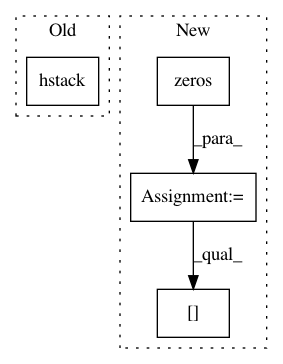

0fba025c0d92308682c4fb2401781ce33e17d5dd,pyemma/coordinates/transform/tica.py,EquilibriumCorrectedTICA,_estimate,#EquilibriumCorrectedTICA#Any#,423
Before Change
self._covar.estimate(iterable, **kwargs)
C0 = self._covar.cov
C_0_eq = np.hstack(( // in modified basis
np.vstack((R.T.dot(C0).dot(R), self._covar.mean.dot(R))),
np.vstack((self._covar.mean.dot(R), 1.0))
))
C_tau_eq = K
// find R_eq s.t. R_eq.T.dot(C_0_eq).dot(R_eq) = np.eye(s)
s, Q = scl.eigh(C_0_eq)
evmin = np.min(s)
After Change
self._covar.estimate(iterable, **kwargs)
C0 = self._covar.cov
C_0_eq = np.zeros(shape=(r+1, r+1)) // in modified basis
C_0_eq[0:r,0:r] = R.T.dot(C0).dot(R)
C_0_eq[0:r, r] = self._covar.mean.dot(R)
C_0_eq[r, 0:r] = self._covar.mean.dot(R)
C_0_eq[r,r] = 1.0
C_tau_eq = K
// find R_eq s.t. R_eq.T.dot(C_0_eq).dot(R_eq) = np.eye(s)
s, Q = scl.eigh(C_0_eq)
In pattern: SUPERPATTERN
Frequency: 3
Non-data size: 4
Instances
Project Name: markovmodel/PyEMMA
Commit Name: 0fba025c0d92308682c4fb2401781ce33e17d5dd
Time: 2016-12-13
Author: fabian.paul@mpikg.mpg.de
File Name: pyemma/coordinates/transform/tica.py
Class Name: EquilibriumCorrectedTICA
Method Name: _estimate
Project Name: nipy/dipy
Commit Name: ba50f604c8394e819870d6fc08ede0248185c385
Time: 2015-03-16
Author: arokem@gmail.com
File Name: dipy/tracking/life.py
Class Name: FiberModel
Method Name: setup
Project Name: PyMVPA/PyMVPA
Commit Name: e36d3bc0ae6faf950344e68e5fd2fb8ca0ec43fb
Time: 2008-03-10
Author: per@parsec.Princeton.EDU
File Name: mvpa/misc/signal.py
Class Name:
Method Name: __detrend_regress